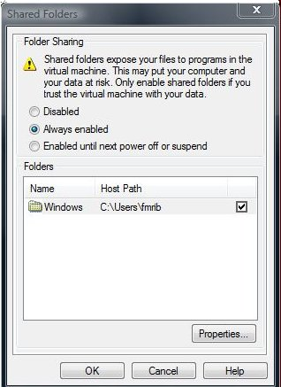
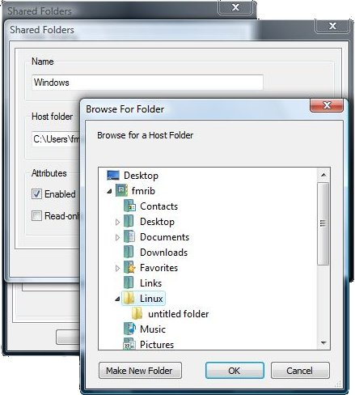

We recommend using a unix-based computer (such as a Linux PC, Apple or Sun) for carrying out data analysis. However, if this is not available then you can use FSL on a Windows computer by running the Linux version of FSL inside a "virtual linux machine" (a VM), using a freely available program called VMware Player. This is fairly easy to setup, and we provide basic installation instructions below, but please note that we cannot in general offer further help for the setup and maintenance of the virtual machine itself - we just offer support on the running of FSL.
The software package VMware Player emulates the core hardware of an x86 machine allowing you to run a second operating system 'in a window'. Virtualisation technology allows the programs running in this VM to achieve speeds approaching that of programs running natively in Windows, as the CPU instruction set doesn't need to be emulated.
The FSL VM (FSLvm) is configured with 1GB of RAM, a virtual hard disk that can grow to 30GB in size, shared (NAT) networking (ie it shares the network connection of your local computer), virtual sound hardware and virtual CDROM and floppy drives.
Before you can run the FSL virtual machine, you need to install a Virtual Machine player package. We support the use of version 2 of VMware's free VMware Player software. Download the software from VMware's site and install this package by following VMware's instructions. Once it is installed and your computer has been restarted, launch VMware Player to complete initial setup.
Once VMware Player is installed, download the FSLvm from below. The FSLvm is compatable with both Windows XP and Windows Vista:
FSLvm is a fairly minimal install of the CentOS 5 Linux distribution and is provided as a zip file. To install, unzip the downloaded FSLvm by double clicking on the zip file and clicking on 'Extract all files' in the resulting explorer window.
The Windows zip expansion wizard will launch. Extract the files to an appropriate location; VMware Player creates a folder in your Documents folder called Virtual Machines (My Virtual Machines under Windows XP) when run for the first time, which is intended for this purpose. Under Windows XP, be sure to create a folder (eg fsl_vm5_32) to contain the files if you have more than one VM as the Windows XP zip expansion wizard does not preserve the top level folder of the zip archive.
Detailed VMware Player application usage instructions are available from the VMware Player menu's 'Help' entry.
Now that the FSLvm is installed, launch VMware Player from the Start menu and click on the 'Open' icon. In the Open dialogue, browse to the uncompressed FSLvm folder, fsl_vm5_32 and double click on the fsl_vm5_32 file within.
You can also launch the FSLvm by visiting the fsl_vm5_32 folder in the Windows file explorer and double clicking on the fsl_vm5_32.vmx file (icon with three interlocking blue squares) to launch VMware Player and start up the FSLvm.
Subsequent to the initial launch, the FSLvm will appear in the list of Recent Virtual Machines allowing quick launch.
The first time FSLvm is started VMware Player will ask if you would like to change the UUID of the device, choose Create. This will ensure that the FSLvm generates a new unique network hardware identifier.
Depending on your Windows coputer's hardware, you may also receive additional messages like...
Cannot connect to virtual device floppy0. No corresponding device is available on the host. Would you like an attempt to be made to connect this virtual device every time you power on the virtual machine?
This means that VMware Player cannot locate a floppy disc drive on your computer.Select No and you will not be informed of this again. If, instead, it warns you about device IDE 1:0 then it is unable to find a CD ROM drive. Again choose No to dismiss this warning permanently.
The FSLvm will now boot, a process that will take several minutes. Once the boot process has completed, you will be presented with a graphical login screen (initially a textual login screen will appear - wait a little longer for the desktop environment to start). Log in as the user
fsl
and password
fsluser
After a few moments you will be presented with the Linux desktop environment.
Before continuing, you should take a moment to verify that you have the correct keyboard layout. The FSLvm is configured with a British keyboard; users with a different keyboard layout can change by visiting System->Preferences->Keyboard from the menu at the top of the screen. This will the keyboard configurator. Switch to the Layouts tab and click the large + symbol to add a keyboard layout.
In the windows that appears choose an appropriate layout from the pane on the left (you can drag the divider to see the name of the layout better). Some layouts have alternatives which can be viewed by clicking on the disclosure triangle. However, in most cases the top-level layout will be appropriate. Then select the check box next to your new keyboard layout to make this the default. Finally, deselect Separate group for each window.
Once you have the correct keyboard layout, the first task you should undertake is to reset a few passwords to more secure values.Right click on the desktop and choose Open Terminal from the menu. In the terminal window that opens, type the following:
passwd
When prompted, enter the current password
fsluser
and then enter a new password twice - choose a secure password (see this Wikipedia entry for advice on password selection).
Next you will need to change the password of the root user in the FSLvm, do this by issuing the following commands in a terminal window:
/bin/su -
Enter the current root password,
fslroot
Then type
passwd
Again, when prompted, enter a new password twice - choose a different secure password.
Important: Do not forget these passwords, as you will lose access to FSLvm and all the files stored within it without them.
Now type:
exit
to return to the normal user account.
You can now install FSL using the Linux instructions
There are four options for transfering/accessing files stored on your Windows disk in the FSLvm, presented in order of ease of use:
The VMPlayer application supports the dragging and dropping of files from Windows into the FSLvm. To transfer files select them in the Windows explorer and then drag them into your FSLvm window and drop in the folder you would like it to reside in (or onto the Desktop).

File sharing has been configured in the FSLvm to share the entire C: drive to the FSLvm. However, due to the potential security risk this poses, VMware Player disables this functionality by default.
Before changing the sharing settings first create a folder to share. Put this folder somewhere appropriate in your home folder. To enable sharing and to point it to this new folder, start up the FSLvm and visit the VMware Player menu and open the Shared Folders... dialogue.

To enable sharing permenantly select the Always Enabled radio button. Now select the pre-configured share and click on the Properties button. This will open another dialogue box allowing you to change the name the share will appear as in Linux and to change the Windows file path for the shared folder. Click on the Browse button and locate the folder you created earlier.
Click on the OK buttons to dismiss the dialogues. You should now restart your FSLvm (only necessary the first time you enable sharing) by choosing System->Shutdown from the top menu bar in the Linux desktop and clicking on the Reboot button when prompted on what to do.
You may now access files held within this shared folder through the path /mnt/hgfs. To navigate there through the graphical file browser, double click on Computer on the desktop and then, in the resulting window, double click on Filesystem. This will open a folder showing the folder / from where you can navigate to mnt and then hgfs. Within here will be the shared folder, named as specified in the Shared Folders dialogue.
Warning: Do not attempt to modify the same files in this shared folder in both operating systems at once - bad things will happen!
If you connect a USB storage device whilst VMware Player is running and has the input focus it will allow Linux to see the storage device. In most cases it will automatically mount and an icon will appear on the Linux desktop. Linux has read-only support for NTFS, so you will need to create an ext3 (Linux support only) disk partition or use FAT32 format which can be read on both OSes. Note: FAT32 is not supported for storing files that you are actively accessing with the FSL tools.
The FSLvm is configured to share your network connection, and so has full access to the internet out of the box. You can also access your FSLvm from Windows over this internal network with tools like puTTY (a SSH terminal client).
To identify the IP address of the FSLvm, in a terminal in the FSLvm type:
/sbin/ifconfig | grep -C 1 'eth0'
You are looking for the dotted quartet printed after inet addr:
Connection to the host is now possible using this address as the hostname to connect to.
Under normal circumstances you should just close the FSLvm window, this will suspend the FSLvm to disk allowing quick restoration of your session at a later date. However, sometimes it may be necessary to shutdown the FSLvm entirely (say if you are moving it to a new computer). To do this, choose System->Shutdown from the Linux desktop menu. Once Linux has shut down VMware Player will exit.
If the FSLvm appears to have frozen, you can force a reset by selecting Reset from the Troubleshooting menu.
From time to time the Linux vendor will issue security updates which in general should be installed to keep the FSLvm secure.
When updates are available a message window will appear in the top right of the Linux desktop advising you of what updated packages are available. Clicking on the icon associated with this message will open the package update utility which can be used to update the system.
Warning: Be aware, that any updates listed as 'kernel' updates change the core of the operating system, and will result in the accelerated drivers installed in the FSLvm to cease to function. To restore this functionality it is necessary to update the vmware-tools, as this driver package is termed. To do this, log in as the root user and open a terminal window. Within this window type vmware-tools-upgrader. You will now be asked a series of questions. Hit return to accept the default to all of the questions. Once the installation is complete you should reboot the FSLvm to allow the changes to take effect.